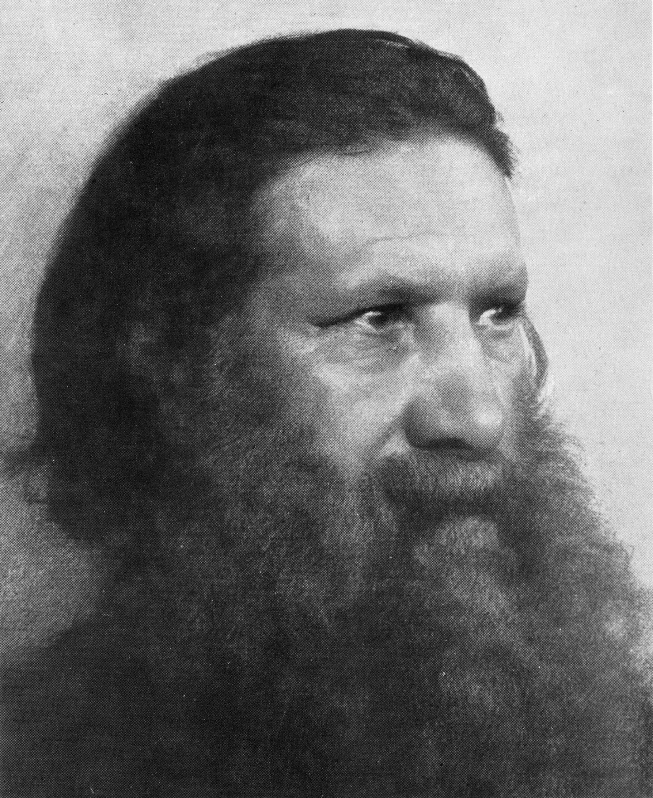
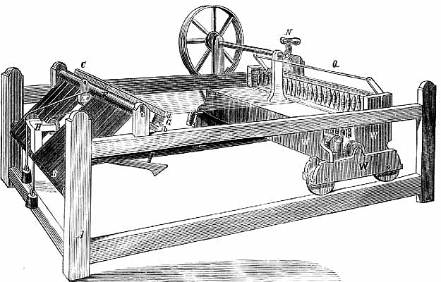

Fogalom
1780 körül Angliából kiinduló gazdasági fellendülés, amely iparszervezési és technikai újításoknak köszönhető. Az ipari forradalom során kialakul a gépesített tömegtermelés a manufaktúrákat gyárak váltják fel. Az ipari forradalom folyamatosan terjedt kelet felé; első szakasza 1850 körül zárult le.
A textilipart forradalmasító találmányok
Találmányok
- James Watt:Gőzgép
- Fulton:Gőzhajó
- Stephenson:Gőzmozdony
- John Kay:Repülő vetélője
- Arkwright:Vízi meghajtású fonógép
Bemutatás szempontok szerint
| 1 ipari forradalom | Szempontok |
|---|---|
| Anglia,Franciaország | ipari hatalmak |
| Könnyűipar,ezen belül a textilipar | Húzóágazat |
| Gyapjú,Gyapot | Nyersanyag |
| Szén | Energiaforrás |
| Gőzgép | Erőgép |
| Találékony mesteremberek | Találmányok felfedezői |
| Kis - és közepes üzemek | Üzemméret |
| Szabad verseny | Iparszervezés |